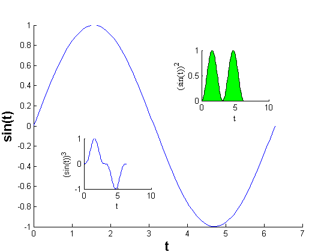

This is an example of how to create an inset plot within another plot in MATLAB®.
Read about the axes function in the MATLAB® documentation.
Go to MATLAB Plot Gallery
% Create data t = linspace(0,2*pi); t(1) = eps; y = sin(t); % Place axes at (0.1,0.1) with width and height of 0.8 figure; handaxes1 = axes('position', [0.1 0.1 0.8 0.8]); % Main plot plot(t, y); xlabel('t'); ylabel('sin(t)'); set(handaxes1, 'box', 'off'); % Adjust XY label font handxlabel1 = get(gca, 'xlabel'); set(handxlabel1, 'fontsize', 16, 'fontweight', 'bold'); handylabel1 = get(gca, 'ylabel'); set(handylabel1, 'fontsize', 16, 'fontweight', 'bold'); % Place second set of axes on same plot handaxes2 = axes('position', [0.6 0.6 0.2 0.2]); fill(t, y.^2, 'g'); set(handaxes2, 'box', 'off'); xlabel('t'); ylabel('(sin(t))^2'); % Adjust XY label font set(get(handaxes2, 'xlabel'), 'fontname', 'times') set(get(handaxes2, 'ylabel'), 'fontname', 'times') % Add another set of axes handaxes3 = axes('position', [0.25 0.25 0.2 0.2]); plot(t, y.^3); set(handaxes3, 'box','off'); xlabel('t'); ylabel('(sin(t))^3');